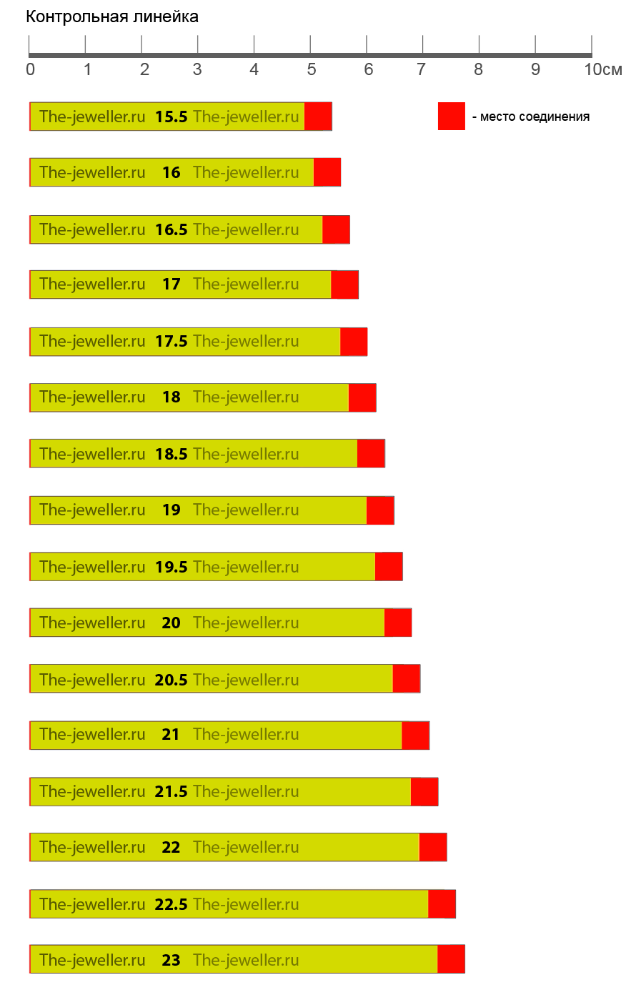

Узнай свой размер!
Часто при выборе кольца, возникает вопрос о размере, очевидно этот вопрос возник и у Вас.
Специально для Вас мы придумали легкий способ измерить Ваши размеры и правильно подобрать кольцо. В натоящее
время ювелирный интернет-магазин The-jeweller.ru - единственный ювелирный магазин в Интернет, предлагающий
этот способ измерения.
Уважаемые конкуренты, убедительная просьба при использовании материалов с данной
страницы ссылаться на ювелирный интернет магазин The-jeweller.ru
Четко следуйте инструкции и уже через несколько минут Вы узнаете необходимые Вам размеры колец:
Распечатайте эту страницу на принтере.
[распечатать]
Проверьте по контрольной линейке соответствие масштаба.
Аккуратно вырежьте ножницами полоски.
Нанесите небольшое количество клея для бумаги, как это показано на полоске.
Совместите 2 красные линии для и склейте полоску.
Подождите несколько секунд пока высохнет клей.
Примерьте кольцо, размер кольца написан на черном фоне.

Если Вы хотите подарить кольцо и не знаете нужного размера, Вы можете в шутку
попросить одеть бумажное кольцо, и таким образом узнаете размер!
С уважением,
The-jeweller.ru